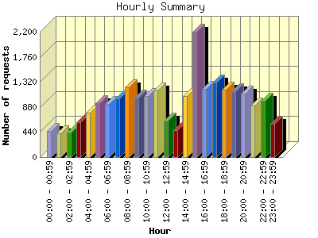

Report generated by Analog 6.0 and Report Magic 2.21
|
Web Server Statistics for "Harish Narayanan (hnarayan) - December 2005" Report generated by Analog 6.0 and Report Magic 2.21 |
The Hourly Summary identifies the level of activity broken down by each hour. Remember that one page hit can result in several server requests as the images for each page are loaded. This summary also compares the level of activity during working hours and after hours as a total for the report time frame.


| Hour | Number of requests | Number of bytes transferred | Percentage of the bytes | Percentage of the requests | |
|---|---|---|---|---|---|
| 1. | 00:00 - 00:59 | 462 | 33.490 MB | 4.14% | 2.01% |
| 2. | 01:00 - 01:59 | 422 | 19.142 MB | 2.37% | 1.83% |
| 3. | 02:00 - 02:59 | 437 | 32.828 MB | 4.06% | 1.90% |
| 4. | 03:00 - 03:59 | 617 | 24.768 MB | 3.06% | 2.68% |
| 5. | 04:00 - 04:59 | 783 | 22.689 MB | 2.81% | 3.40% |
| 6. | 05:00 - 05:59 | 948 | 26.509 MB | 3.28% | 4.12% |
| 7. | 06:00 - 06:59 | 934 | 24.334 MB | 3.01% | 4.06% |
| 8. | 07:00 - 07:59 | 1,036 | 28.599 MB | 3.54% | 4.50% |
| 9. | 08:00 - 08:59 | 1,224 | 24.177 MB | 2.99% | 5.32% |
| 10. | 09:00 - 09:59 | 1,048 | 26.566 MB | 3.29% | 4.56% |
| 11. | 10:00 - 10:59 | 1,076 | 33.697 MB | 4.17% | 4.68% |
| 12. | 11:00 - 11:59 | 1,170 | 51.957 MB | 6.43% | 5.09% |
| 13. | 12:00 - 12:59 | 643 | 50.846 MB | 6.29% | 2.79% |
| 14. | 13:00 - 13:59 | 479 | 21.406 MB | 2.65% | 2.08% |
| 15. | 14:00 - 14:59 | 1,068 | 51.331 MB | 6.35% | 4.64% |
| 16. | 15:00 - 15:59 | 2,199 | 60.161 MB | 7.44% | 9.56% |
| 17. | 16:00 - 16:59 | 1,202 | 35.824 MB | 4.43% | 5.22% |
| 18. | 17:00 - 17:59 | 1,313 | 37.114 MB | 4.59% | 5.71% |
| 19. | 18:00 - 18:59 | 1,181 | 44.396 MB | 5.49% | 5.13% |
| 20. | 19:00 - 19:59 | 1,158 | 37.529 MB | 4.64% | 5.03% |
| 21. | 20:00 - 20:59 | 1,119 | 27.607 MB | 3.42% | 4.87% |
| 22. | 21:00 - 21:59 | 908 | 33.556 MB | 4.15% | 3.95% |
| 23. | 22:00 - 22:59 | 989 | 44.645 MB | 5.52% | 4.30% |
| 24. | 23:00 - 23:59 | 587 | 15.274 MB | 1.89% | 2.55% |
| Work Hours (8:00am-4:59pm) | 10,109 | 355.964 MB | 44.03% | 43.95% | |
| After Hours (5:00pm-7:59am) | 12,894 | 452.481 MB | 55.97% | 56.05% | |
This report was generated on January 5, 2006 20:48.
Report time frame December 1, 2005 00:03 to December 31, 2005 23:42.
| Web statistics report produced by: | |
 Analog 6.0 Analog 6.0 |  Report Magic 2.21 Report Magic 2.21 |